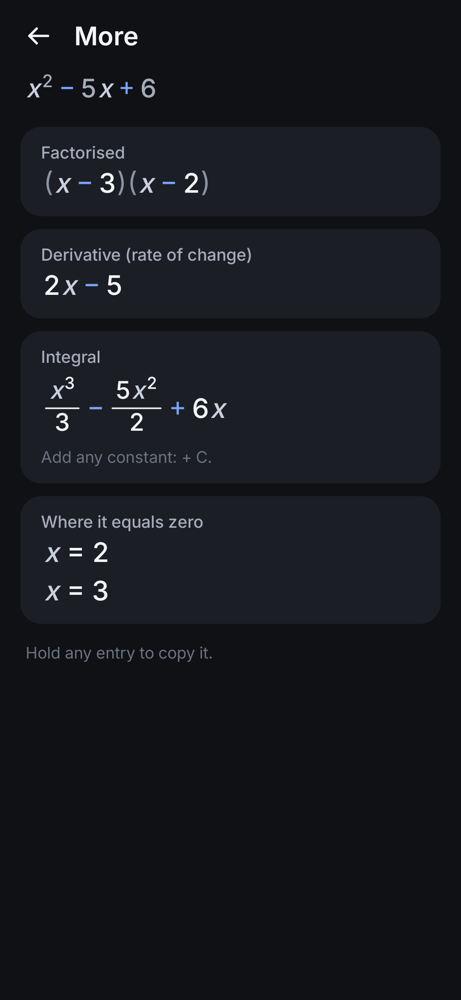
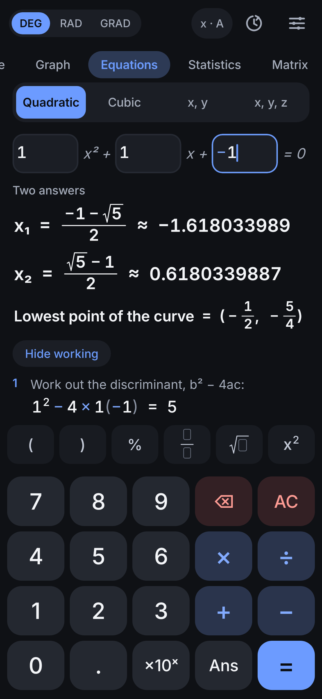
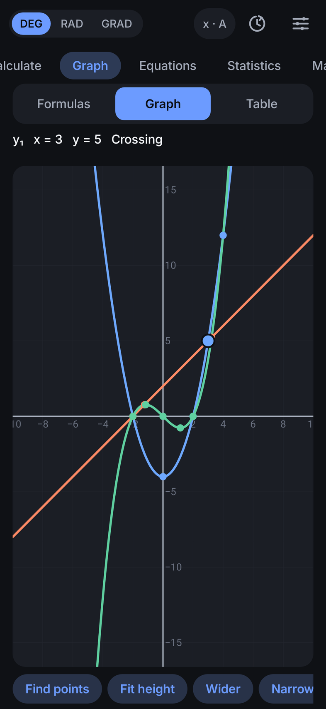
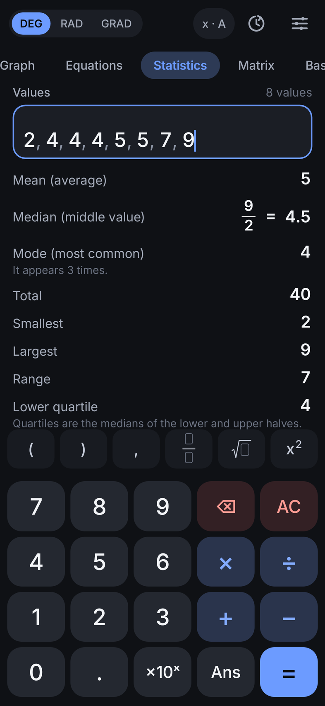
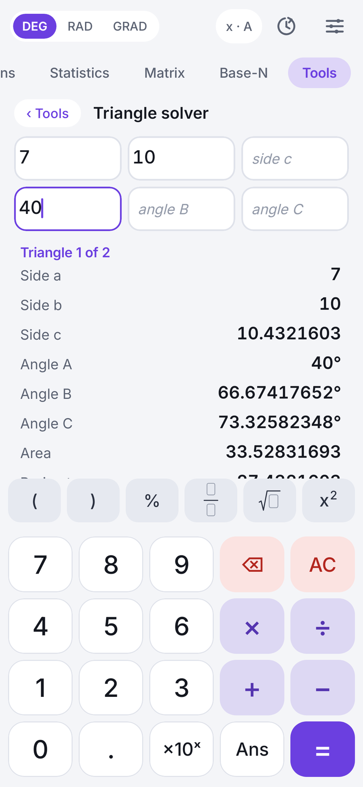

The answer, and proof it is right.
Axiom is a scientific calculator for Android. It draws sums the way you write them, keeps answers exact, and tells you plainly whether an answer is exact or rounded.
It also does algebra, solves equations with the working shown, draws graphs and converts units. It is free, with no adverts and nothing to unlock, and it cannot go online.
Download for AndroidHow to install
- Version 1.0
- Android 12 or later
- 23 MB
Free, with nothing to unlock. No adverts, no account with the developer, no tracking. Compare or read the release notes.
Chrome may say the file might be harmful. It shows this for app files that do not come from Google Play. Choose Download anyway.
- No subscriptionEvery mode is in the free app.
- No advertsNone in the app and none on this site.
- No internetThe app has no permission to go online.
- Exact first= for exact, ≈ for rounded.
A look inside
These are the real screens, drawn from the app's own code. Swipe or scroll sideways to see them all.





How it works
Most calculator apps give you a decimal and leave you to trust it. Axiom is built round three ideas.
Type it as you write it
Fractions, roots and powers are drawn as they are on paper, and the answer appears as you type.
Exact first
Whole numbers and fractions never touch rounded arithmetic, so 0.1 + 0.2 is 0.3. Roots and π stay exact until the last moment.
Checked before it is shown
Every decimal is worked out twice. Every exact form is typed back in and compared. Anything that fails a check is not shown.
Everything is in, and all of it is free
Nothing below is held back for a paid tier, because there is no paid tier.
Calculating
- Textbook display
- Fractions are stacked, roots stretch over what they cover and powers are raised.
- Exact answers
- sin 15° is (√6 − √2)/4 as well as 0.2588190451, and one tap switches between them.
- An honest equals sign
- An exact answer is shown with =, a rounded one with ≈.
- Errors in plain English
- A mistake is underlined where it is, with a sentence that says what is wrong.
Maths
- Algebra
- Simplify, expand, factorise, differentiate and integrate formulas in x, y and z.
- Equations with working
- Quadratics, cubics, and two or three simultaneous equations, with the steps shown.
- Graphs
- Up to four formulas. Drag, pinch, read a curve, and find crossings and turning points.
- Statistics, matrices, complex numbers and base-N
- A list's every statistic, matrices up to 4 × 4, sums with i, and binary to hexadecimal.
Tools
- Unit converter
- Twelve kinds of unit, with every factor the exact legal definition.
- Shapes and triangles
- Areas and volumes of twelve shapes, and a solver for any triangle.
- Your own functions, memories and history
- Save formulas as f and g, six memories, and a searchable history with pins.
Your way
- Eight themes and six accents
- Light, dark and black, with a stronger-contrast option.
- On its side and on tablets
- The keys sit beside the sum.
- A widget and a backup file
- A home-screen calculator, and everything saved to one file.
Your sums are your business
No internet at all
Axiom has no permission to go online. It cannot send anything anywhere.
No account
There is nothing to sign up to.
No ads, no tracking
There is no advertising, analytics or tracking, in the app or on this site.
Installing and updating
Axiom is not on Google Play, so your phone asks a couple of extra questions the first time.
Download the app file
Tap Download on your phone. The file is called Axiom.apk and is about 23 MB. If Chrome says the file might be harmful, choose Download anyway.
Allow the install
Open the file. The first time, Android asks you to allow your browser to install apps. Allow it, go back and tap Install. If Google Play Protect steps in, choose More details, then Install anyway.
Updating later
Axiom tells you when a newer version is out. Install the new file over the old one and everything you have saved is kept.
Version 1.0, released 19 November 2026. See the release notes, or check your download.
Questions
Is Axiom really free?
Yes. There is no paid version, no subscription, no trial and no adverts, and nothing in the app is locked.
Is Axiom on Google Play?
No. It is downloaded from this site as an Android app file. Android asks you to allow the install the first time.
Does it need the internet?
No. Axiom has no internet permission, so it cannot go online at all. Everything, including algebra and graphs, works on the phone.
Which phones does it run on?
Phones and tablets with Android 12 or later.
How accurate is it?
Whole numbers and fractions are worked exactly. Roots, π and trigonometry are kept exact and turned into a decimal only for display, to the number of figures you choose. Graph readings and the triangle solver give rounded answers.
Can it take a photo of a sum?
No. Sums are typed. Reading sums from photos is unreliable, and a wrong reading gives a wrong answer that looks right.
How do I move to a new phone?
In Settings, Backup, save a backup file. Install Axiom on the new phone and restore from that file.
The answer, exact when it can be, and honest when it cannot
Free, with no adverts and nothing to unlock. Made by the developer of several other free Android apps: see them all.